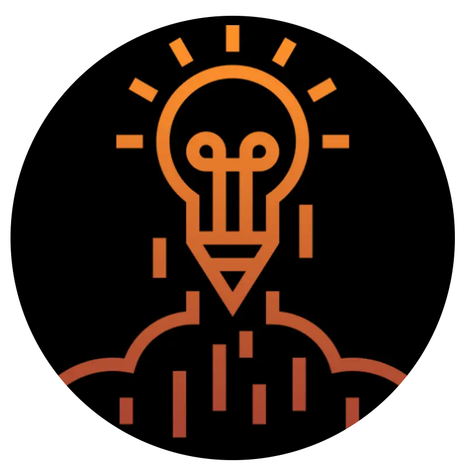

Apoyo para pacientes
Herramientas para ansiedad, temor, cambios emocionales y adaptación al tratamiento.
Psicooncología · Panamá
Acompañamiento emocional especializado para pacientes, familiares y cuidadores durante el diagnóstico, tratamiento, recuperación y seguimiento oncológico.
Agendar una consulta de psicooncologíaAcompañamiento integral
Un diagnóstico oncológico puede generar ansiedad, temor, cambios en la dinámica familiar y dificultades para adaptarse a nuevas rutinas. La psicooncología ofrece un espacio profesional para comprender y trabajar esas necesidades.
En HOPE Panamá, el acompañamiento puede incluir herramientas para manejar el estrés, fortalecer la comunicación, preparar conversaciones importantes y apoyar tanto al paciente como a su red cercana.
Cómo podemos ayudarte
El acompañamiento se adapta a las necesidades, el momento clínico y la realidad de cada persona y familia.
Herramientas para ansiedad, temor, cambios emocionales y adaptación al tratamiento.
Apoyo para la comunicación, la organización del cuidado y el manejo de cambios familiares.
Acompañamiento durante el tratamiento, la recuperación y las etapas de seguimiento.
Atención relacionada
La psicooncología complementa la atención clínica y puede integrarse a distintas etapas de la ruta del paciente.
Consulta enfocada en las necesidades emocionales de pacientes y familias.

Valoración médica, segunda opinión y seguimiento especializado.

Tratamientos administrados en un entorno controlado y acompañado.
Especialista
Conoce su enfoque de acompañamiento para pacientes, familiares y cuidadores durante el proceso oncológico.
Ver perfil profesionalMotivos de consulta
Solicitar apoyo emocional es válido en cualquier etapa y no requiere esperar a sentirse sobrepasado.
Herramientas para afrontar la incertidumbre, los estudios y el inicio del tratamiento.
Orientación para conversar sobre el diagnóstico, las necesidades y los cambios cotidianos.
Apoyo ante cambios físicos, emocionales y sociales relacionados con el proceso.
Recursos para familiares y cuidadores que también atraviesan exigencias emocionales.
Preguntas frecuentes
No necesitas una preparación especial. Puedes anotar las situaciones, emociones o preguntas que deseas conversar.
Es un área de acompañamiento que atiende las necesidades emocionales y psicológicas relacionadas con el proceso oncológico.
No. Familiares y cuidadores también pueden recibir orientación y apoyo según sus necesidades.
En cualquier etapa: diagnóstico, tratamiento, recaída, recuperación, seguimiento o adaptación posterior.
Psicooncología en Panamá
Consultorios Pacífica Salud, Piso 8, Boulevard Pacífica Salud, Vía Punta Darién, Panamá.
Agenda una consulta
Podemos orientarte sobre disponibilidad y ayudarte a coordinar la atención adecuada.